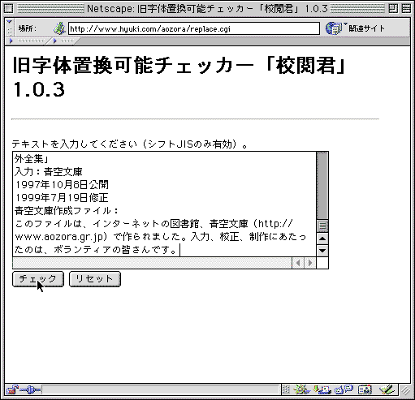
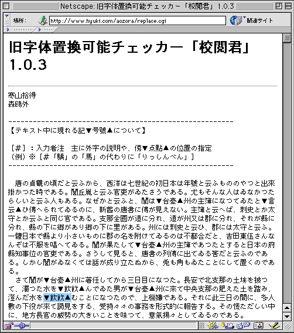
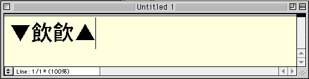
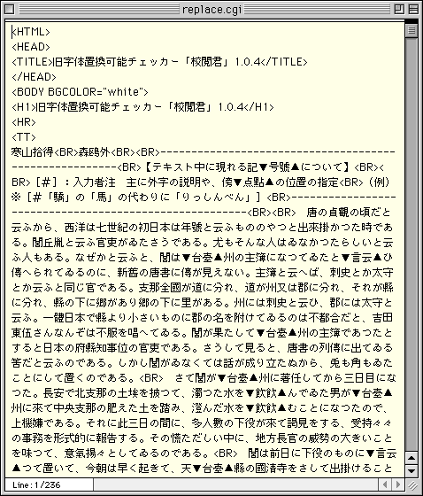
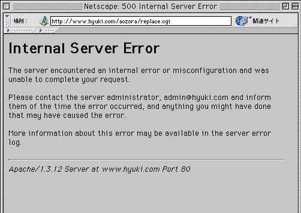

校閲君を使ってみよう
旧字ファイルに紛れ込んだ新字や俗字を、目で見て拾い出すことは、困難な作業です。
青空文庫の旧字ファイルに、かなりの頻度で新字・俗字が紛れ込んでしまう事態には、これまで有効な手が打てませんでした。
こうした状況に突破口を開く、新字・俗字洗い出しツールが「校閲君」です。
青空文庫メーリングリストに集う仲間たちのうち、Perlと呼ばれる言語に詳しい皆さんの働きによって、校閲君を使いこなす環境が整いました。
校閲君は、旧字ファイル中に紛れ込んだ新字・俗字を洗い出すためのツールです。
校閲君のプログラムを書いてくれたのは、大野裕さんです。
もともとは手許のパソコンで使う形だった校閲君を、結城浩さんがウェッブブラザーから利用できる形に仕立ててくれました。
このオンライン版校閲君なら、プログラムを動かすための事前の準備なしに、すぐに使ってみることが可能です。
「ここ」をクリックすると、結城さんの青空文庫応援ページに用意された、校閲君が開きます。

●旧字体置換可能チェッカー「校閲君」のページ。結城さんによる解説は、こちら。
チェックしたい旧字ファイルをエディターかワープロで開き、すべてを選択してコピーしてください。
ここでは、森鴎外「寒山拾得」を使って、チェックの手順を確認していきます。
適当なファイルが手許になければ、ここから「寒山拾得」のテキスト版をダウンロードして使ってください。（「寒山拾得」のファイルは、zip形式で圧縮されています。テキストとして開くには、解凍処理が必要です。zipを解凍できるツールを持っておられない方のうち、Macintoshユーザーは、こちらから「StuffIt Expander」をダウンロードして使ってください。Windowsユーザーは、このページを参考に解凍ツールを選び、引き落としてください。）
校閲君の入力ウインドウにカーソルを立てて、チェックするテキストをペーストします。

●「リセット」のボタンをクリックすると、入力ウインドウにペーストしたテキストが、クリアーされる。入力ウインドウにペーストしたテキストが、文字化けして表示されることがある。そんなときも、そのままチェックしてしまえばよい。文字化けを理由に、リセットを行う必要はない。
「チェック」のボタンをクリックします。
しばらく待つと、校閲君によるチェックの結果が画面に表示されます。

●校閲君のチェック結果。あやしい文字と代替候補を、「▼▲」で挟んで示してある。
校閲君は、「あやしい」と判定したものに、黒三角のマークを付けてきます。
「▼」の右が、ファイル中に使われている新字もしくは俗字。そのとなりに、代替候補の旧字もしくは正字。
冒頭の「▼号號▲」は、「このファイルでは「号」が使われていますが、底本中にあるのは「號」ではないですか？」との問いかけを意味しています。
チェック結果のウインドウの中で青く示しておいた「▼飲飮▲」は、一見したところ、どこが違うのか、見きわめがつかないでしょう。
「▼飲飮▲」をコピーして、エディターかワープロのウインドウにペーストし、表示フォントを大きくして確かめてみましょう。

●先に示されているのが、チェックしたファイルで使われている「飲」。こちらは、新字。後に示されている代替候補の「飮」が、旧字。
「▼台臺▲」や「▼言云▲」など、明らかに形が異なっているものでは、入力ミスは起こりにくいはずです。
一方、「▼飲飮▲」のように、小さなサイズではほとんど見分けの付かないものになると、誤りの確率がグンと高くなります。
「▼飲飮▲」のようにマークされた箇所を底本と照合し、置き換えの必要はないのか、確認してみてください。
インターネットへの接続料金が気になる方は、腰を据えて照合にかかる前に、校閲君のチェック結果を保存しておきましょう。
ウェブブラウザーのメニューの「表示」には、ページの組み立てを記述した元ファイル（ソースファイル）の引き落としを要求する命令が用意されています。
「文書のソース」「ソース表示」「ページのソース」といった項目を選ぶと、HTMLのタグの付いたソースファイルが、「replace.cgi」のファイル名で表示されます。

●ソースファイルの表示例。表示用のアプリケーションになにが指定されているかで、少し見え方は異なってくる。T-Timeの正規版を利用している人は、ソース表示用アプリケーションにT-Timeを指定している可能性が高いだろう。この設定でソースファイルを求めると、当然T-Timeで開かれる。多分、縦組みになっているかも知れない。この場合も、メニューの「ファイル」から「別名で保存」を選べば、以下の手順通りインターネットへの接続を切ってから、開き直せる。
ソースファイルを表示しているソフトのメニューの「ファイル」から、「別名で保存」を選んで「replace.cgi」を保存してください。
インターネットへの接続を切り、保存したファイル（名前を付け替えていなければ、「replace.cgi」のままのはずです。）をウェッブブラウザーで開き直してください。
ウェッブブラウザーのウインドウに該当のファイルをドラッグ＆ドロップするか、ウェッブブラウザーのメニューの「ファイル」で「ファイルを開く」といった命令を選び、現れたダイアログボックスで該当のファイルを指定すると開けます。
オンライン版校閲君が一度にチェックできる文字数は、およそ2万字です。
限度を超えると、次のようなエラーメッセージが表示されます。

●このメッセージが表示されても、hyuki.com管理者への連絡は行わないこと。
このメッセージが表示されたら、チェックするファイルを分割し、2万字以内を一まとまりとして作業してください。
現在、旧字旧仮名版の入力、または校正にあたっている方は、必ず校閲君によるチェックを行ってください。
今後、旧字旧仮名版の入力、または校正にあたられる際は、必ず校閲君によるチェックを作業工程に組み込んでください。
底本と照合して、旧字・正字に置き換えるべき新字・俗字が見つかったら、ファイルを修正するか、校正用のプリントアウト（ゲラ）に訂正指示を書き込んでください。
旧字旧仮名版の校正作業を、ゲラだけで進めておられる方は、info@aozora.gr.jpにファイルを送るよう、求めてください。
かつて旧字旧仮名作品の入力にあたられた方に、お願いします。
あなたが作業された作品のうち、底本が手許に残っているもの、底本の手配がつきやすいものに関しては、可能なときに校閲君によるチェックと底本との照合を行っていただけないでしょうか？
チェックと照合の結果を、info@aozora.gr.jp宛、お知らせください。
ファイル中に使われている「飲」（新字）がすべて、底本中では「飮」（旧字）であった場合は、「「飲」はすべて「飮」に変更」と、まとめて指示してください。
場合によっては、新字と旧字、正字と俗字が同一作品中で使い分けられていることもあるかもしれません。
万が一、使い分けが行われていた場合は、該当個所を含む適当な範囲をコピーして、「「ろくな藥は飲ませて貰ふことが出來なかつたのである。」の「「飲」は「飮」に変更」などと、個別に指示してください。
皆さんからまとめてご指摘をいただいても、ファイルの修正は少しずつ進めていくことしかできません。
世話役の側もぼちぼち作業していきますので、皆さんもどうぞ、ご自分のペースでチェックに取り組んでみてください。
校閲君の働きに関するここまでの説明の中では、新字と旧字、正字と俗字が何を意味するかという点には触れませんでした。
果たしてこれらは、正確には何を指すのか、あらためてここで確認しておきたいと思います。
●新字と旧字
「新字」「旧字」という言葉が生まれるきっかけをつくったのは、いわゆる戦後改革の柱の一つとして進められた、国語改革です。
敗戦から間もない、1946（昭和21）年11月16日、「当用漢字表」が内閣告示されました。
これまで我が国で用いられてきた漢字は大変数が多く、使い方も複雑で、不便な点があった。そこで漢字の使い方を制限し、「国民の生活能率をあげ、文化水準を高める」ようとする、試みでした。
この当用漢字表では、一部の文字で、それまで慣用的に使われてきた簡易字体が、「本体」として採用されました。
いくつかの文字に関しては、「これからは簡単なこの字体を使おう」と、政策的に決められたのです。
このとき採用された簡易字体は、漢字字書などにまとめられてきた従来の規範の中では、俗字や略字とされてきたものでした。
実は、当用漢字表には、字体の吟味に十分でない点がありました。
そこで、「当用漢字表制定の趣旨を徹底させるため」として、さらに字体の整理を推し進めた「当用漢字字体表」が、1949（昭和24）年4月28日に内閣告示されます。
当用漢字表では131字で採用された簡易字体が、都合約500字と大幅に増えることになりました。（当用漢字字体表で新たに採用された簡易字体には、俗字や略字に加え、新たに点画が整理されたものがありました。）
国の定めた当用漢字で、たくさんの簡易字体が「これからの形」としてお墨付きを得たのですから、これらを今までのように、俗字や略字などと呼ぶのは不適当でしょう。
そこで用いられるようになったのが、「新字」という呼称です。
あらためて新字を定義すれば、「当用漢字に採用された、簡易字体」と言えるでしょう。
一方の旧字は、「従来、正字とされてきたもののうち、対応する簡易字体が当用漢字に採用されたもの」となるでしょうか。（「新字」に表看板を奪われて、裏に回らざるを得なくなった、従来の「正字」なんて言い方の方が、ピンとくるかもしれません。）
「乱」は、当用漢字表制定以前は、正字「亂」の俗字でした。
ところが、当用漢字表で「乱」が「本体」と決められたため、こちらが「新」となって表に立ち、「亂」は「旧」となって裏に回った。
このように当用漢字によって表裏が逆転した関係を表すのが、新字、旧字という言葉です。
当用漢字はその後、制限の色彩を薄めた常用漢字へと引き継がれます。
1981（昭和56）年10月1日、常用漢字表が内閣告示され、これに伴って「当用漢字表」「当用漢字字体表」は廃止されました。
新字に対する定義はこれに伴って、「常用漢字に採用された、簡易字体」に、旧字は「従来、正字とされてきたもののうち、対応する簡易字体が常用漢字に採用されたもの」となりました。
●正字と俗字、略字
これまでの説明の中で、これも断りなしに使ってきた「正字」と「俗字」「略字」についても、ここで定義しておきましょう。
「正字」とは、その漢字の仕組みからして「正しいと判断される形のもの」を指します。
絶対の基準があるわけではなく、漢字字書の編纂者などによる判断の結果、「正しい」とされるわけですから、別の認識が示されたり、時をへて異なった判断が下されることがあり得ます。
「正しい」とする有力な根拠となってきたのは、1716（康煕55）年に、歴代の字書を集大成して刊行された、康煕字典に示された形です。
ただし、康煕字典体が必ず正字体とされるかといえば、そうとは限りません。
康煕字典体を有力な根拠としながら、個々の判定者による認識の揺れや、時代の移り変わりに伴う変化も組み込みながら、「正字」はそのつど主張されてきました。
正字を指して、「いわゆる康煕字典体」と多少の含みを持たせながら書かれることがあるのは、こうした事情からきています。
一方の「俗字」とは、「本来の形がくずれた形で通用しているもの」を指します。
中でも、「字画の一部が省略されて通用しているもの」は特に、「略字」と呼ばれます。
参考：「フォント情報処理用語 標準情報(TR) TR X 0003:2000」
・当用漢字表は、ここで参照できます。当用漢字字体表は、こちらで参照できます。これらのHTMLファイルには、JIS X 0213で定義された文字コードを使用しています。これらを表示できるKandataもしくはHabianをインストールし、ウェッブブラウザーの表示フォントに指定すると、すべての文字が表示できる場合があります。（Windows95、98、Unix、Macintoshでは、ブラウザーによっては表示できます。WindowsNTとWindows2000では、内部処理に使われているUnicodeとシフトJISの変換テーブルがJIS X 0213に対応していないために、どんなブラウザーを用いても表示することができません。）
・Kandata、Habianの入手法は、ここで説明しています。
・KandataもしくはHabianを表示フォントに指定したけれど、ウェッブブラウザーで第3第4水準が見られない場合でも、HTMLのソースファイルをT-Timeの正規版で開けば、すべての文字が表示できます。T-Timeのメニューで、「設定」から「解釈」を選び、「X0213サポート」をチェックしてください。HTMLのタグが見えてしまっているときは、同じく「解釈」で、「HTML」をチェックしてください。
・T-Timeに関して知りたければ、ここを参照してください。
・当用漢字や常用漢字などに盛り込まれた文字種は、「漢字表一覧――常用漢字・教育漢字・人名用漢字・当用漢字――」で確認できます。
戻る。